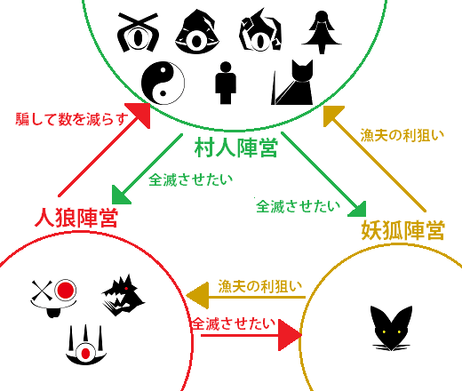
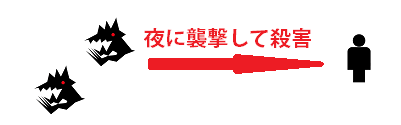
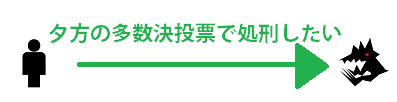

汝は人狼なりやは、村人陣営と人狼陣営(妖狐陣営が加わることもあります)に分かれて、相手陣営の正体を見破る会話型推理ゲームです。

各プレイヤーはゲーム開始時にいずれかの陣営に振り分けられます。自分の役職(陣営)は確認できますが、他のプレイヤーの役職を知る事はできません。
この時、特殊な能力を持った役職が割り当てられることがあります。(→役職と能力)
人狼となったプレイヤー達は、自分が人狼であることを悟られないように振る舞いながら、村人を殺害してゆきます。

村人陣営となったプレイヤー達は、会話を通して誰が人狼であるかを推理し、多数決投票によって怪しいプレイヤーを処刑してゆきます。
ただし、投票には村人になりすましている人狼陣営のプレイヤーも参加します。

この流れを繰り返し、最終的に相手を滅ぼした陣営の勝利となります。
(妖狐は最後まで生き残ることが勝利につながります)